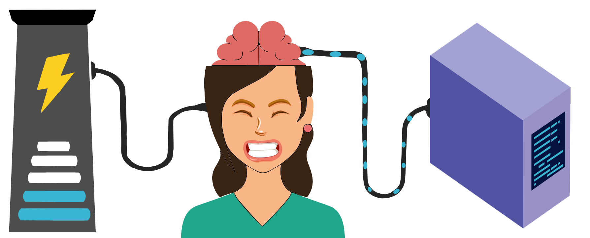

Hacking The Imposter
Feeding Your Mindset The Right Fuel
Resources to help
Michelle Obama explains imposter syndrome
You are not FAKE!
Never give up!
Spotify
Do you ever feel like a fraud? Are you living with chronic self-doubt? Do you question whether you deserve to be in your role? If so, you're not alone! As a leadership coach and lifelong struggler with impostor syndrome, I wanted to create a space where professionals can tell their personal stories and unburden themselves of the silent shame that comes with this experience. I also wanted listeners to be able to hear themselves in others and realize that they are not alone. On this podcast, we'll share the stories of professionals from different backgrounds who've struggled with and learned to manage impostor syndrome. We'll also learn from experts on how to better manage ourselves and our environments to minimize the overall threat of impostor syndrome. Let's erase the stigma and stop feeling ashamed of these very normal experiences. And let's come together to share our challenges and strategize how to effectively rise above them.
Testimonials

Jk Rowling
"It is impossible to live without failing at something, unless you live so cautiously that you might as well not have lived at all, in which case you have failed by default."

Michelle Obama
"No country can ever truly flourish if it stifles the potential of its women and deprives itself of the contributions of half its citizens."

Oprah Winfrey
"It doesn't matter who you are, where you come from. The ability to triumph begins with you."